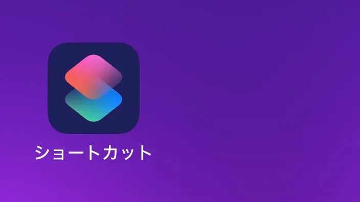
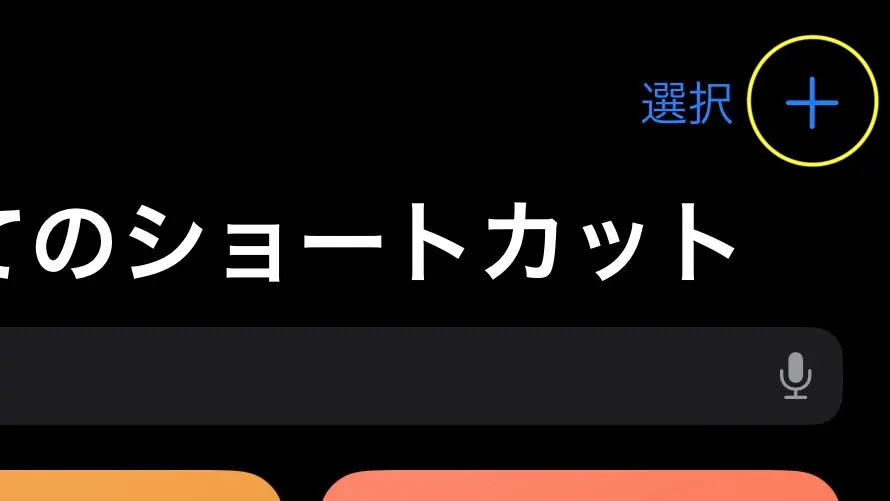
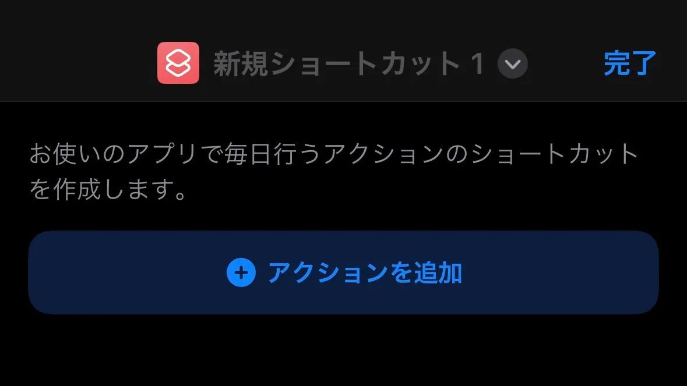
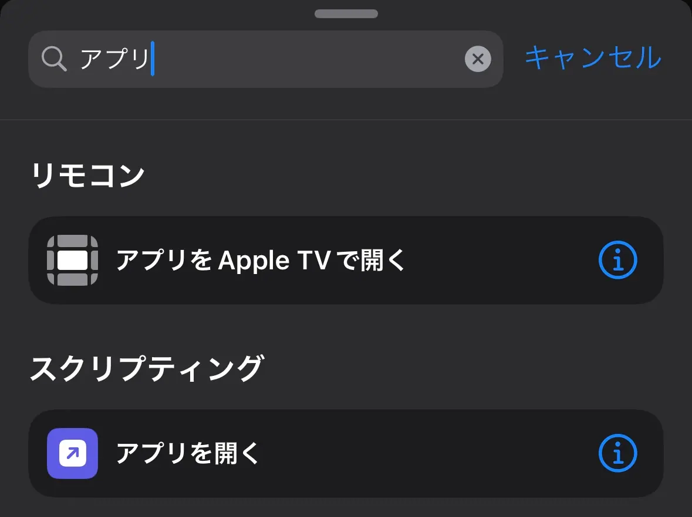
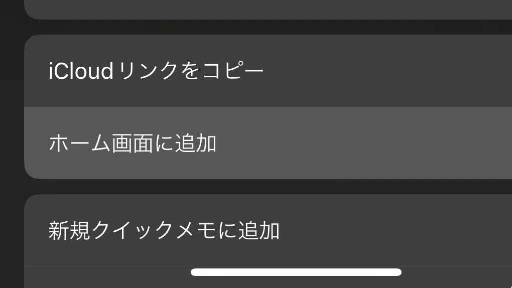
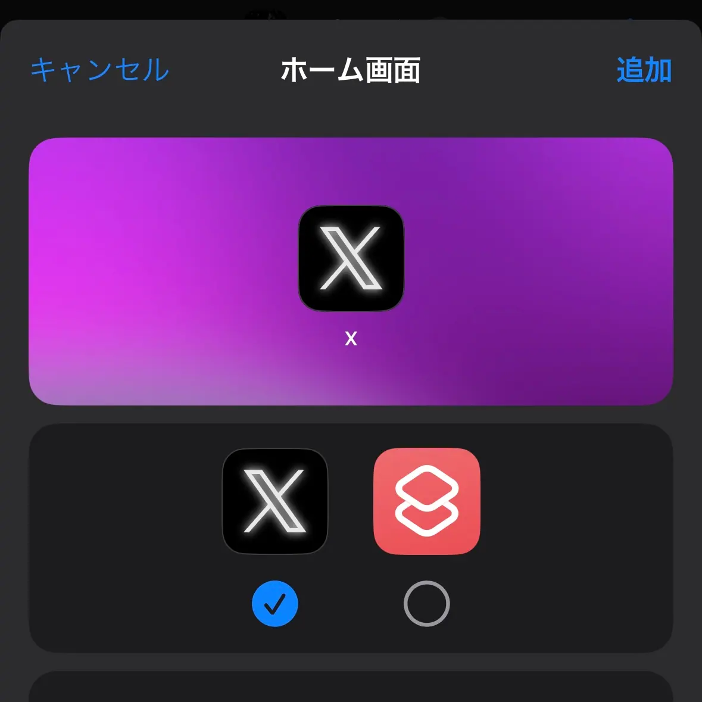

ぞるあストアで購入したiPhone/iPad用アイコンの設定方法
解凍
購入ができたら送られてきたメールにあるダウンロードボタンを押してダウンロードしてください。そしてzipファイルを解凍してください。
iPhoneではダウンロードすると「ファイル」アプリの中に入ります。またZipファイルはタップすることで解凍可能です。
注意
iPhoneの仕様で以下の方法で設定するとiPhone14Pro、iPhone15以降の機種の場合はDynamicIsland、それ以外の機種の場合は通知が出てくるポジションに進行状況が表示されます。
設定
「ショートカット」アプリを使用して設定します。
アプリを開いたら右上の「+」から新規ショートカットを作成します。
「アクションを追加」を押して、

「アプリを開く」のアクションを追加してください。
そして空欄になっている「アプリ」の部分を押して任意のアプリを設定してください。
右下の共有ボタンを押して、
「ホーム画面に追加」を押します。

左側の画像を選択できるボタンを押し、「ファイル」アプリから「写真」アプリに追加いている場合は「写真を選択」を押し、任意のアイコンを設定してください。
ダウンロードして「ファイル」アプリの中にあるままの場合は（解凍して）「ファイルを選択」を押し、任意のアイコンを選択してください。
最後に右上の「追加」を押すことでホームに追加されます。